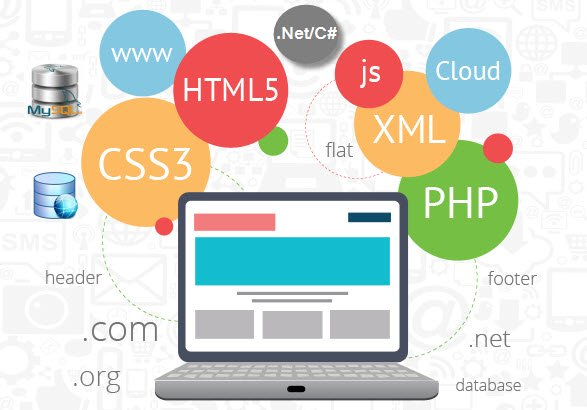
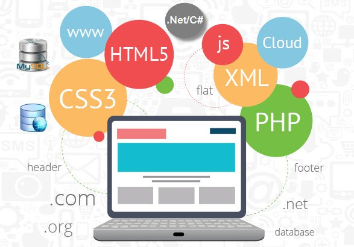

Explora el mundo de las tecnologías para desarrollo de aplicaciones web en ASP.NET
Una Web API (Interfaz de Programación de Aplicaciones) es un conjunto de endpoints (puntos de acceso) que permiten la comunicación entre aplicaciones a través de Internet. Desarrollar una Web API implica diseñar y crear estos endpoints para exponer funcionalidades y datos a otros sistemas o aplicaciones de forma segura y eficiente.
Web Forms
ASP.NET Web Forms es un marco de trabajo para crear aplicaciones web dinámicas y ricas en contenido. Utiliza un modelo de programación basado en eventos, similar a la programación de aplicaciones de escritorio, lo que lo hace fácil de usar para desarrolladores familiarizados con ese paradigma.
Es especialmente útil para desarrollar aplicaciones que requieren controles de servidor y eventos de servidor para interactuar con el usuario.
- Facilita el desarrollo de aplicaciones que requieren controles de servidor y eventos de servidor para interactuar con el usuario.
- Proporciona un modelo de desarrollo rápido para crear interfaces de usuario complejas.
- Permite una fácil integración con tecnologías y servicios existentes de ASP.NET.
Windows Communication Foundation (WCF)
Windows Communication Foundation (WCF) es un marco de trabajo para construir servicios distribuidos en Windows. Permite a los desarrolladores crear servicios seguros y confiables para una variedad de escenarios, incluidos servicios web, mensajería, transacciones y más.
WCF proporciona una amplia gama de funcionalidades para la interoperabilidad entre aplicaciones y sistemas distribuidos.
- Proporciona un modelo unificado para construir y consumir servicios.
- Ofrece soporte para la interoperabilidad entre diferentes plataformas y tecnologías.
- Permite la implementación de servicios seguros mediante la integración con mecanismos de autenticación y autorización de Windows.
Model-View-Controller (MVC)
ASP.NET MVC es un marco de trabajo para construir aplicaciones web escalables y mantenibles. Adopta el patrón de diseño Modelo-Vista-Controlador, que separa la lógica de negocio, la presentación y la interacción del usuario, lo que facilita el desarrollo y la prueba de aplicaciones.
El patrón MVC promueve una separación clara de responsabilidades, lo que permite una mejor organización del código y un mantenimiento más sencillo.
- Promueve una separación clara de responsabilidades, lo que facilita el mantenimiento y la evolución de las aplicaciones.
- Proporciona un mayor control sobre el HTML generado, lo que permite una mayor flexibilidad en la creación de interfaces de usuario.
- Facilita la realización de pruebas unitarias y de integración gracias a su arquitectura modular y desacoplada.
Web API
ASP.NET Web API es un marco de trabajo para construir servicios HTTP RESTful. Permite a los desarrolladores crear APIs que pueden ser consumidas por diversas plataformas y dispositivos, facilitando la creación de aplicaciones web y móviles conectadas.
Con Web API, puedes diseñar una arquitectura orientada a recursos para tu aplicación, lo que permite una fácil integración con otras aplicaciones y servicios.
- Permite diseñar una arquitectura orientada a recursos para tu aplicación, lo que facilita la integración con otras aplicaciones y servicios.
- Proporciona soporte para formatos de datos como JSON y XML, lo que permite la interoperabilidad con diferentes clientes.
- Facilita la implementación de operaciones CRUD (Crear, Leer, Actualizar, Eliminar) mediante el uso de verbos HTTP estándar.
SignalR
SignalR es una biblioteca de ASP.NET que simplifica la creación de aplicaciones web en tiempo real. Permite la comunicación bidirecc
SignalR facilita la implementación de características como chat en tiempo real, notificaciones push, seguimiento de ubicaciones en tiempo real y actualizaciones en vivo.
- Proporciona una API sencilla para la comunicación en tiempo real basada en WebSocket o tecnologías alternativas si WebSocket no está disponible.
- Permite la transmisión de datos en tiempo real desde el servidor al cliente y viceversa, lo que habilita la construcción de aplicaciones interactivas y colaborativas.
- Ofrece soporte para diferentes plataformas y tecnologías de cliente, incluyendo JavaScript, .NET y Xamarin.
ASP.NET Core
ASP.NET Core es una evolución de la plataforma ASP.NET, diseñada para ser más modular, ligera y rápida. Es multiplataforma, lo que significa que puede ejecutarse en Windows, Linux y macOS. ASP.NET Core es ideal para construir aplicaciones web modernas y escalables.
Con ASP.NET Core, puedes aprovechar características como la inyección de dependencias, la autenticación integrada y el soporte para contenedores, lo que facilita la implementación y el mantenimiento de aplicaciones web.
- Es altamente modular y extensible, lo que permite la selección y utilización solo de los componentes necesarios para tu aplicación.
- Proporciona un rendimiento mejorado y una mayor escalabilidad en comparación con las versiones anteriores de ASP.NET.
- Incluye características modernas como la inyección de dependencias, la autenticación integrada y el soporte para contenedores.
Razor
Razor es un lenguaje de marcado de ASP.NET que permite a los desarrolladores combinar código C# con HTML de manera sencilla y elegante. Con Razor, puedes crear vistas dinámicas de forma eficiente, lo que facilita el desarrollo de aplicaciones web interactivas y dinámicas.
Razor ofrece una sintaxis intuitiva y legible que mejora la productividad del desarrollador al escribir vistas y componentes reutilizables.
- Ofrece una sintaxis intuitiva y legible que mejora la productividad del desarrollador al escribir vistas y componentes reutilizables.
- Permite la mezcla fluida de código C# y HTML en la misma página, lo que facilita la implementación de la lógica de presentación y la interacción con el modelo de datos.
- Proporciona soporte para la creación de vistas parciales, que permiten la reutilización de código HTML y la creación de componentes modulares.
Blazor
Blazor es un marco de trabajo de Microsoft que permite desarrollar aplicaciones web interactivas utilizando .NET y C# en lugar de JavaScript. Con Blazor, puedes crear aplicaciones web de una sola página (SPA) de forma rápida y con la familiaridad de C# y .NET.
Blazor ofrece una experiencia de desarrollo moderna con características como la renderización del lado del cliente, la interactividad en tiempo real y la reutilización de componentes. Además, permite compartir código entre el cliente y el servidor, lo que simplifica el desarrollo y la depuración.
- Permite compartir código entre el cliente y el servidor, lo que simplifica el desarrollo y la depuración de aplicaciones.
- Ofrece una experiencia de desarrollo moderna con características como la renderización del lado del cliente, la interactividad en tiempo real y la reutilización de componentes.
- Proporciona una integración sin problemas con la pila de tecnologías de .NET, lo que facilita la implementación de características avanzadas y el mantenimiento a largo plazo.
Galería de Ejemplos
 
